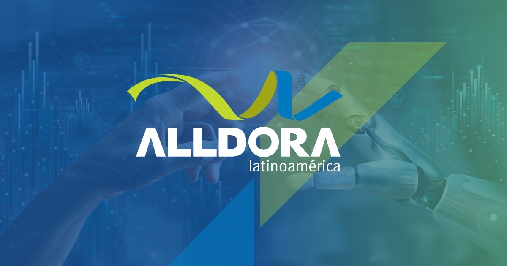
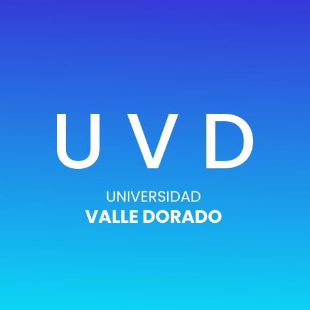
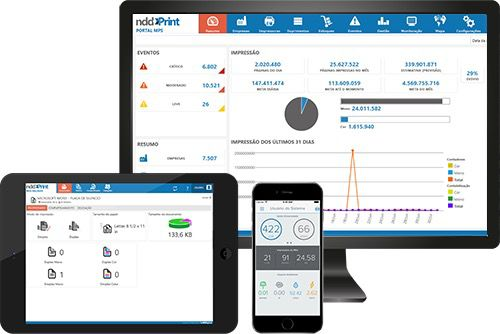
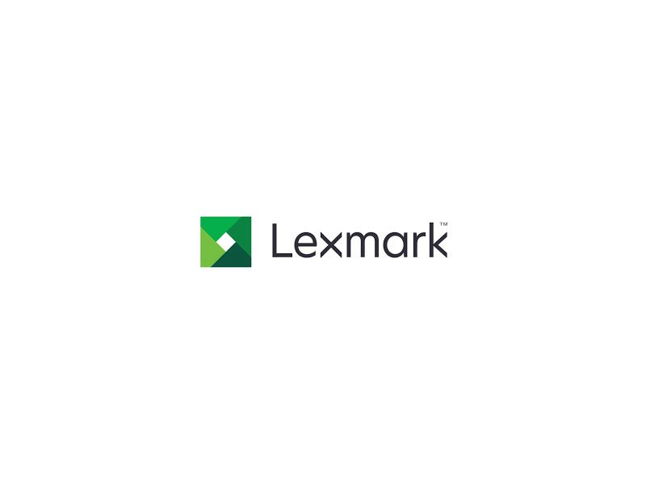

Ángel Alberto Alvarado Ventura
Soporte Técnico | MPS | Tecnologías de la Información
a.alvarado3030@gmail.com | Tel: 5578599983
Ciudad del Carmen, Campeche
Síntesis
Responsable de asistencia técnica con experiencia. Mi avanzado conocimiento de herramientas TIC me permite brindar un excelente nivel de soporte y solucionar todo tipo de problemas de manera rápida y efectiva. Deseo incorporarme a una empresa consolidada. Profesional con amplia experiencia y muchas ganas de trabajar. Me caracterizo por mi capacidad para solucionar problemas, priorizar y gestionar proyectos y trabajar en equipo. Busco una oportunidad para desarrollar mi carrera y dar lo mejor de mí.
Perfil Profesional
Profesional proactivo y con orientación a resultados, con 2 años y 2 meses de experiencia en el ámbito de los servicios gestionados de impresión (MPS) y soluciones tecnológicas, incluyendo soporte técnico, gestión de clientes y optimización de flotas de impresión. Habilidad demostrada en la administración de plataformas como NDD Orbix y NDD Print 360, así como en el manejo de equipos multifuncionales Lexmark. Actualmente cursando la Licenciatura en Tecnologías de la Información en la Universidad Valle Dorado, lo que refuerza mi capacidad para la integración, implantación, operación y administración de sistemas informáticos. Buscando aplicar mis conocimientos técnicos y experiencia en un entorno dinámico para contribuir al éxito de los objetivos empresariales.
Experiencia Laboral
Ing. en Soporte en Sitio - Alldora Latinoamérica
Ciudad del Carmen, Campeche | Mayo 2023 - Actual
- Proporcionar un excelente servicio al cliente para ayudarles a resolver sus problemas es una parte esencial de este papel.
- Alldora es el proveedor actual de Cotemar en temas de sistemas de impresión digital de la cual su servidor trabaja en la mesa de ayuda de tickets que se llama UNUS.
- Mis actividades van enfocadas a los siguientes puntos:
- Configuración de perfiles y accesos para nuevos usuarios.
- Resolución de problemas técnicos de software, hardware y red.
- Diagnóstico y resolución de problemas de hardware, software y firmware.
- Identificar y solucionar problemas técnicos, esto incluye problemas con el hardware, el software, servidores, tanto plataformas y tierra.
- Mantenimiento y actualización: La ingeniería de soporte está en la primera línea de los niveles de soporte técnico cuando los usuarios tienen problemas.
- Búsqueda de puntos vulnerables en la seguridad de los sistemas con el protocolo HTTP y HTTPS.
- Creación y desarrollo de procedimientos de resolución de incidentes.
- Elaboración de informes sobre el estado de los equipos y sistemas de la empresa.
- Gestión y actualización de las bases de datos.
- Realización de pruebas de funcionamiento y diagnóstico de fallas.
- Apoyo técnico a usuarios de manera presencial, telefónica y vía chat.
- Configuración de nuevos dispositivos y programas.
- Derivación de problemas que necesiten un nivel de atención especializada.
- Registro de las gestiones realizadas en el sistema de la empresa.
- Instalación y prueba de actualizaciones de software.
- Ejecución de pruebas de seguridad de los sistemas.
- Seguimiento de los tickets de atención hasta su resolución. Mantenimiento rutinario de servidores y sistemas.
Administrador del Almacén (Dentro de Alldora Latinoamérica)
Ciudad del Carmen
- Coordinación del personal del taller y gestión de tareas. Gestión de la calidad de los procesos y resultados de impresión.
- Uso de los programas adecuados para la configuración de los trabajos a imprimir.
- Además, cuando se me requería de forma foránea por ejemplo en Coatzacoalcos, Pajaritos, Cuichapa, Paraíso, Dos Bocas.
- Tengo cursos certificado en la academia NddPrint y en Lexmark University Garantizamos que el servicio sea de lo mejor, tengo 3 años de experiencia abordo, conozco todas las plataformas de Cotemar, barcos y lanchas.
Técnico en Impresoras - Sistema de Impresión Digital
Cd del Carmen, Campeche | Enero 2023 - Mayo 2023
- Revisión de equipos de copiado y multifuncionales Mantenimientos Preventivos Mantenimientos correctivos.
- Instalación y Traslado de Equipos.
- Configuración y Capacitación al personal Anteriormente era el proveedor de Cotemar yo solamente me enfocaba a ser técnico abordo.
- Término de contrato.
Analista de Mesa de Control - OPL
CUMUAPA, Tabasco | Octubre 2021 - Abril 2022
- Administrar en sistema el flujo de materiales, llevando un control en el programa de trabajo, conciliando movimiento de materiales contra registro en sistema y/o documentando requerimientos de entrega, con el objeto de que el almacén pueda ejecutar los procesos de facturación y abasto.
- Identificar las prioridades, generar y monitorea en sistema las tareas a ejecutar por el personal del almacén.
- Conciliar que el flujo de materiales empate en forma físico vs sistema, a fin de evitar discrepancias.
- Garantizar que los documentos de embarque sean los necesarios para generar la entrega y obtener el POD (Proof of Delivery Analizar los procesos Control de materiales y control de documentos, a fin de identificar áreas de oportunidad y contribuir a la mejora continua de los mismos.
Formación Académica
Licenciatura en Tecnologías de la Información
Universidad Valle Dorado (UVD) | México
Enero 2024 - Diciembre 2025 (Estimado) | Promedio general: 9.7
Técnico Económico Administrativo
CETIS 20 | Ciudad del Carmen, Campeche
Junio 2012 - Julio 2015
Certificaciones y Cursos
Certificaciones NDD Print
- NDD Print 360 - Capacitación Técnica NDD Print MPS y 360 (6h 20m) - Feb 2024
- NDD Print 360 - Componentes (15m) - Feb 2024
- NDD Print 360 - Conceptos (10m) - Feb 2024
- NDD Print 360 - Contabilización y Liberación Segura Lexmark (5m) - Nov 2024
- NDD Print 360 - Funcionalidades (10m) - Feb 2024
- NDD Print 360 - Portal (12m) - Feb 2024
- NDD Print MPS - Contratos (30m) - Abr 2025
- NDD Print MPS - Eventos (20m) - Nov 2024
- NDD Print MPS - Funcionalidades Básicas (5m) - Abr 2025
- NDD Print MPS - Suprimentos (2h) - Abr 2025
- NDD Orbix - Administración (15m) - Abr 2025
- NDD Orbix - Gestión de Datos (10m) - Abr 2025
- NDD Orbix - Monitorización (20m) - Abr 2025
- BootCamp NDD Print 360 (4h) - Jun 2023
- NDD Cargo - Contratante Master (1h) - Jun 2023
Certificaciones Lexmark
- Lexmark Cloud Services - Intro y Módulos Técnicos - Abr 2024
- Digital Shift Epson - PT | EN (15m) - Abr 2025
- Treinamento Sesión técnica - Q&A (3h 20m) - Abr 2025
Proyectos Relevantes
Administración y Gestión de Impresoras a Nivel Cotemar
Como parte de mis responsabilidades, he administrado un total de **268 impresoras a nivel Cotemar**, asegurando su correcto funcionamiento y disponibilidad tanto en las operaciones en tierra como en las diversas plataformas marítimas.
Implementación e Instalación de Impresoras en Plataformas y Ubicaciones
He llevado a cabo la instalación y configuración de impresoras en diversas plataformas de Pemex y Cotemar, incluyendo:
- **Plataformas Marítimas:** Atlantis, Neptuno, **Iolair**, Hércules, Artemis, Aries, Altas, Orión Primero.
- **Ubicaciones en Tierra:** Ciudad del Carmen (Campeche), Monterrey, Tabasco, Coatzacoalcos, México.
Administración de Servidores de Impresión
Responsable de la administración y mantenimiento de la infraestructura de impresión, gestionando un total de **7 servidores de impresión diferentes**, distribuidos estratégicamente entre las operaciones en tierra y las plataformas marítimas para garantizar la continuidad del servicio.
Competencias y Habilidades
Competencias Generales
- Atención telefónica
- Perfil comercial
- Amplia flexibilidad horaria
- Habilidades de redacción, claridad y precisión
- Solución de problemas
- Trabajo en equipo
- Compromiso con el cliente
- Iniciativa
- Capacidad analítica
- Configuración de firewalls
- Orientación al cliente, empatía
- Profesionalidad
- Buena dicción y capacidad de expresión
- Amabilidad
- Sentido de la responsabilidad
- Confianza
- Capacidad de actualizar los conocimientos
- Capacidad de análisis
- Gestión del estrés y presión
Habilidades Técnicas
- **Plataformas:** NDD Orbix, NDD Print 360, Lexmark Cloud Services, MPS Express
- **Hardware:** Impresoras y MFPs Lexmark (Color/Monocromáticas, A4), Epson
- **Gestión:** Soporte técnico, Flotas, Suministros, Rendimiento, Redes
- **Ofimática:** Microsoft Office (Word, Excel, PowerPoint, Outlook)
Idiomas
- Español: Nativo
Contacto
No dudes en contactarme para cualquier consulta o colaboración.
Email: a.alvarado3030@gmail.com
Teléfono: 5578599983
LinkedIn: Ángel Alberto Alvarado Ventura